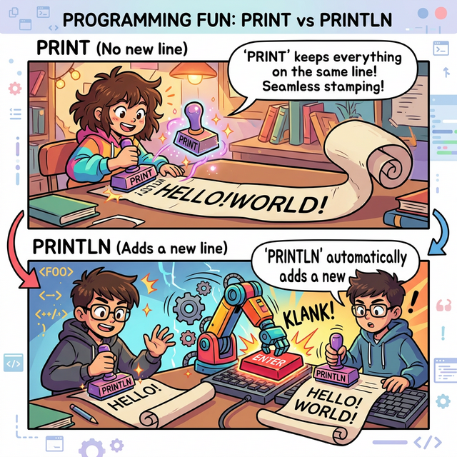
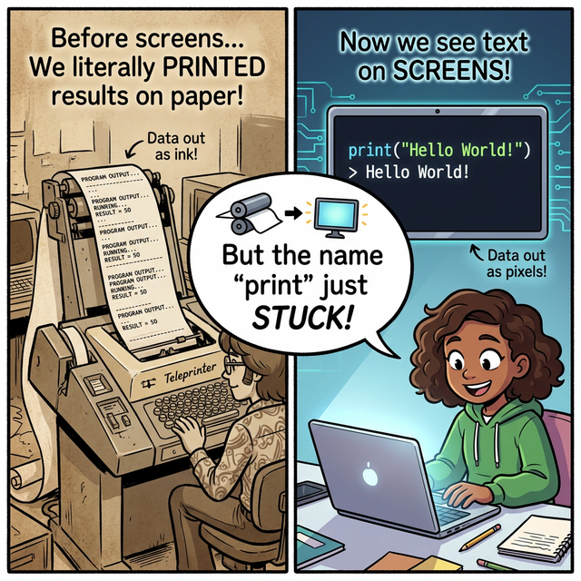
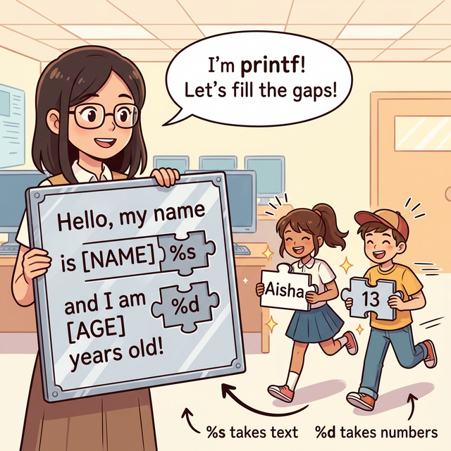
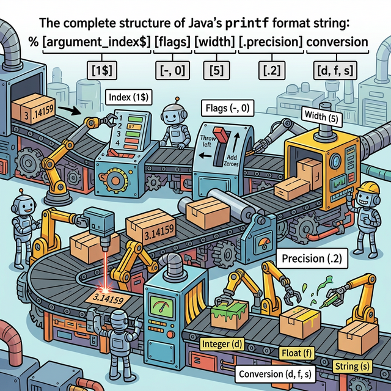
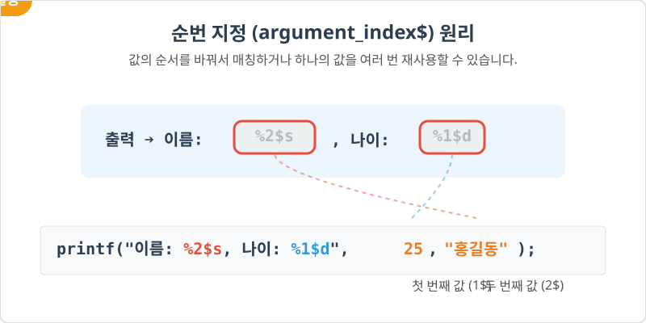
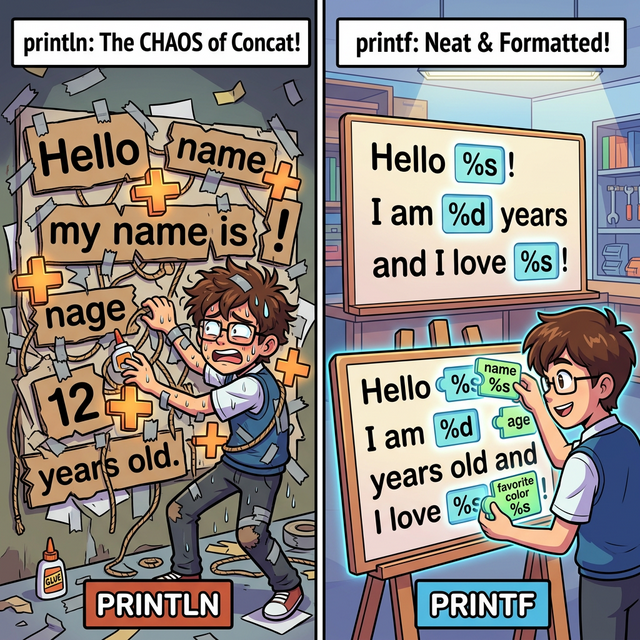

4.10 콘솔 출력
프로그램이 계산한 결과나 사용자에게 보여줄 메시지를 화면(콘솔)에 출력하는 방법을 알아봅니다. 📺
1. 출력 방법 3가지 🖨️
1) 개념
자바는 System.out이라는 기본 출력 도구를 제공합니다.
상황에 따라 3가지 메소드를 골라 쓸 수 있습니다.
2) 비유: “프린터 모드 설정”
- println (Print Line): 한 줄 쓰고 종이를 위로 올리기(엔터)
- print: 한 줄 쓰고 그 자리에 멈추기 (옆에 이어 쓰기)
- printf (Print Format): 서식(양식)에 맞춰서 예쁘게 채워 넣기

▲ 옆으로 계속 이어서 도장을 찍는 print와, 도장을 찍을 때마다 엔터를 쳐 줄이 바뀌는 println의 차이점!
3) 출력 차이 시각화
print 와 println 의 차이를 시각적으로 표현한 것이다.
graph TD
subgraph g1 ["println("A"); println("B");"]
L1[A]
L2[B]
L1 --> L2
end
subgraph g2 ["print("A"); print("B");"]
P1[AB]
end
style g1 fill:#eef,stroke:#333
style g2 fill:#eef,stroke:#333
2. 🧐 궁금증: 왜 화면에 띄우는데 ‘Print(출력/인쇄)’라고 할까?
초보자분들이 종종 묻는 질문입니다.
“모니터 화면에 글씨를 띄우는 건데, 왜 하필 종이에 인쇄할 때 쓰는 print(프린트)라는 단어를 사용할까요?”

▲ 1970년대의 텔레타이프라이터(Teleprinter)와 현대의 모니터 비교
그 이유는 컴퓨터의 역사에 숨어 있습니다! 📜 아주 옛날, 모니터(디스플레이 화면)가 발명되기 전에는 컴퓨터가 계산한 결과를 확인하려면 진짜로 종이에 잉크로 타이핑해서 인쇄(Print)해 주는 기계(텔레타이프라이터)를 사용했습니다.
이후 기술이 발전하면서 결과를 종이 대신 유리 화면(모니터)에 띄우게 되었지만, 프로그래머들이 오랫동안 사용해 와서 입에 쫙 달라붙은 “print”라는 명령어 이름은 시대가 지나도 그대로 굳어져서 지금까지 내려오게 된 것이랍니다.
3. 자주 쓰는 메소드
1) System.out.println()
괄호 안의 내용을 출력하고 줄을 바꿉니다. 가장 많이 사용합니다.
System.out.println("안녕하세요");
System.out.println("반갑습니다");
// 출력:
// 안녕하세요
// 반갑습니다
2) System.out.print()
괄호 안의 내용을 출력하고 줄을 바꾸지 않습니다.
System.out.print("사과");
System.out.print("포도");
// 출력: 사과포도
4. 형식 지정 출력 (printf) 🎨
1) 개념
printf("형식문자열", 값1, 값2, ...) 형태로 사용합니다.
문자열 안에 빈칸(서식 지정자)을 만들어두고, 뒤에 오는 값을 순서대로 채워 넣는 방식입니다.

▲ 빈칸(%s, %d)이 뚫려있는 문장 퍼즐 판에 알맞은 조각(데이터)을 순서대로 끼워 넣는 printf의 원리!
2) 자주 쓰는 서식 지정자 (Format Specifier)
| 기호 | 설명 | 타입 | 예시 |
|---|---|---|---|
%d |
10진수 정수 (Decimal) | int, long |
printf("나이: %d", 25) 👉 “나이: 25” |
%s |
문자열 (String) | String |
printf("이름: %s", "홍길동") 👉 “이름: 홍길동” |
%f |
실수 (Float) | double |
printf("키: %.1f", 175.5) 👉 “키: 175.5” |
꿀팁:
%와 글자 사이에 숫자를 넣으면 자릿수를 맞출 수 있습니다.
%.2f: 소수점 둘째 자리까지 표시 (반올림)
3) 코드 예시
String name = "김자바";
int age = 20;
double height = 180.56;
System.out.printf("이름: %s, 나이: %d세, 키: %.1fcm\n", name, age, height);
// 출력: 이름: 김자바, 나이: 20세, 키: 180.6cm
4) 조금 더 깊게: 서식 지정자의 완벽한 해부! (전체 구조) 🔬
실제로 printf 의 서식 지정자 안에는 그냥 %d만 들어가는 것이 아니라, 여러 가지 기능(너비, 정렬, 소수점 등)을 제어할 수 있는 숨겨진 부품들을 조립할 수 있습니다. 완벽한 조립 공식은 아래와 같습니다.
⭐ % [순번$] [플래그] [전체너비] [.정밀도] 서식문자 (예: %1$-10.2f)
이 거대한 조립 공장을 하나의 그림으로 비유하면 다음과 같습니다.

▲ 1.누구를(Index) ➡️ 2.어느쪽으로 밀어서(Flag) ➡️ 3.몇 칸짜리 상자에(Width) ➡️ 4.얼마나 잘라서(Precision) ➡️ 5.포장할까?(Conversion)
자, 이제 이 조립 공장의 부품들을 하나씩 자세히 뜯어보겠습니다!
① 서식 문자 (Conversion): “무슨 타입이야?” (필수)
가장 끝에 붙으며 어떤 데이터 타입을 출력할지 결정합니다. 이것만은 절대 생략할 수 없습니다!
%d(Decimal): 정수 (int,long). 예:10,-5%f(Float): 실수 (double). 예:3.141592%s(String): 문자열 (String). 예:"Hello"
② 플래그(Flags) & 너비(Width): “자릿수와 정렬 맞추기” 🚩📏
데이터가 출력될 전체 칸 수(너비)를 정비하고, 남는 빈칸을 어떻게 처리할지 정하는 옵션(플래그)입니다.
너비숫자 입력: 입력한 숫자만큼 자리를 잡아놓고 맨 오른쪽으로 붙여 씁니다 (%5d).-(마이너스 플래그): 기본 우측 정렬을 좌측 정렬로 바꿉니다 (%-5d).0(숫자 영 플래그): 남는 빈칸을 공백이 아닌 0으로 꽉 채웁니다 (%05d).
| 서식 지정자 | 설명 | 출력 결과 (값: 99) |
|---|---|---|
%5d |
5칸을 확보하고 오른쪽으로 정렬 (빈칸은 공백) | ` 99` |
%-5d |
5칸을 확보하고 왼쪽으로 정렬 (- 부호 사용) |
99 |
%05d |
5칸을 확보하되, 앞의 빈칸을 0으로 채움 | 00099 |
③ 정밀도 (.precision): “어디까지 자를까?” ✂️
소수점이 있는 실수나 긴 문자열을 원하는 길이만큼 날카롭게 잘라내는 역할을 합니다. 반드시 앞에 마침표(.)를 찍어주어야 너비(Width) 기호와 구별됩니다.
- 실수(
%f)에서: 소수점 아래 몇째 자리까지 출력할지 결정합니다. (자동으로 반올림 처리됨) - 문자열(
%s)에서: 너무 긴 문장에서 앞부분 몇 글자만 잘라서 화면에 내보냅니다.

double pi = 3.141592;
System.out.printf("소수점 통제: %.2f\n", pi); // 3.14 (자동 반올림)
String title = "JavaProgramming";
System.out.printf("문자열 통제: %.4s\n", title); // Java (앞 4글자만 추출)
④ 입력 순번 (argument_index$): “누구 먼저 들어갈래?” 🔀
printf 뒤에 쉼표(,)로 나열한 값들을 구멍 자리에 넣을 때, 굳이 순서대로 넣지 않고 “1번째 값!”, “2번째 값!” 이라며 직접 지목(Index)하는 기능입니다. 숫자 뒤에 달러 기호($)를 붙입니다.
- 같은 데이터를 한 문장에서 여러 번 반복 출력할 때 아주 유용합니다.

// "홍길동"은 2번째 값(2$), 25는 1번째 값(1$)을 지칭!
System.out.printf("이름: %2$s, 나이: %1$d", 25, "홍길동");
// 출력 ➔ 이름: 홍길동, 나이: 25
// 같은 값(1번)을 무한 재사용 가능!
System.out.printf("점수 점수! %1$d, 또 %1$d, 또 %1$d!", 100);
// 출력 ➔ 점수 점수! 100, 또 100, 또 100!
5. 최종 종합 코드 실습 💻
위에서 배운 모든 printf 조립 부품들을 활용한 실전 예제입니다!
[예제: PrintfFormatExample.java]
public class PrintfFormatExample {
public static void main(String[] args) {
String name = "춘식";
int price = 50000;
double discount = 0.156;
System.out.println("=== 🧾 영수증 ===");
// 1. 순번($)과 그냥 서식문자(%s) 활용
System.out.printf("고객: %2$s (회원번호: %1$d)\n", 1004, name);
// 2. 너비와 플래그(-, 0)
System.out.printf("원가: [%10d]원\n", price); // 우측 10칸
System.out.printf("원가: [%-10d]원\n", price); // 좌측 10칸
System.out.printf("원가: [%010d]원\n", price); // 빈칸 0채움
// 3. 정밀도(.precision) 제어
System.out.printf("할인율: %.2f%%\n", discount * 100); // 15.60%
// (주의: % 기호 자체를 출력하려면 %% 두 번 적어주어야 합니다)
}
}
5. 🧐 궁금증: 그냥 print/println 대신 printf를 쓰면 뭐가 좋을까?
위에서 배운 것처럼 굳이 이상한 기호(%s, %d)를 외워가면서까지 printf를 써야 하는 이유가 있을까요? 가장 크고 결정적인 이유는 지저분한 덧셈(+) 코드를 깔끔하게 정리할 수 있기 때문입니다.

▲ 끈적이는 ‘+’ 풀로 변수와 문자를 덕지덕지 이어 붙이는 println과 기분 좋게 알맞은 구멍에 변수를 쏙쏙 끼워 넣는 printf의 차이!
1) 지저분한 문자열 결합(+) 방지
여러 변수를 하나의 문장에 섞어서 출력하려 할 때, println을 쓰면 끊임없이 + 기호와 따옴표를 열고 닫아야 해서 쓰기도 불편하고 오타가 나기도 쉽습니다.
String name = "춘식";
int age = 5;
// ❌ println: 따옴표와 + 기호 범벅 (보기 불편함)
System.out.println("내 고양이의 이름은 " + name + "이고, 나이는 " + age + "살 입니다.");
// ✅ printf: 문장의 모양(포맷)이 한눈에 보임!
System.out.printf("내 고양이의 이름은 %s이고, 나이는 %d살 입니다.\n", name, age);
2) 소수점 자르기와 줄 맞추기가 마법처럼 쉬워짐!
무한소수를 잘라서 깔끔하게 보여주거나, 영수증처럼 위아래 줄을 맞춰야 할 때 println 혼자서는 사실상 불가능합니다. 하지만 printf는 포맷팅 옵션(%.2f, %5d 등) 하나면 복잡한 코딩 없이 알아서 척척 예쁘게 정렬해 줍니다. 따라서 데이터를 예쁘고 깔끔하게 출력해야 할 때는 무조건 printf가 유리합니다!